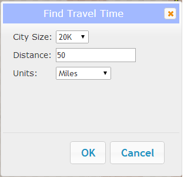
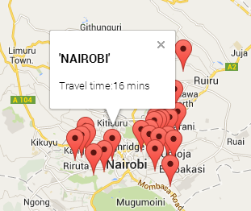
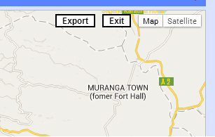

This application performs travel time calculations from cities to a chosen point and visualizes time-dependant population data. These two main functions are explained in greater detail below.
Travel Time Tools
Step 1
To calculate the travel time from cities to a chosen point, click the "Find Travel Time" button. A popup will show with inputs for city size and buffer distance parameters. Enter your parameters and click OK.
Step 2
Click on the map. After a few moments, the map will be replaced with a travel time map showing all cities of the designated size within the designated buffer of your click point.
Step 3
To view individual travel times, click on the city marker.
Step 4
To export all cities with travel times, click "Export" in the upper right corner of the map. Follow your browser prompts to download the CSV file.
Step 5
To return to the main map, click "Exit". The main map will display your search buffer as well as all cities meeting your city size criteria. You can clear these by clicking "Clear Travel Time" in the left panel.
Viewing Time-Enabled Population Data
Layer Control
The layer control in the left panel allows you to control which layers are displayed in the map. Use the checkbox to control the visibility of the layer. To see more information about the data source and description, click "Metadata".
Time Control
Both the Population Density and Cities layers contain data from 1990 through 2015. To view each year's data, drag the slider in the bottom panel to the correct year. You can also use the play button to automatically advance time, or use the forward and back buttons to step forwards and backwards in time.